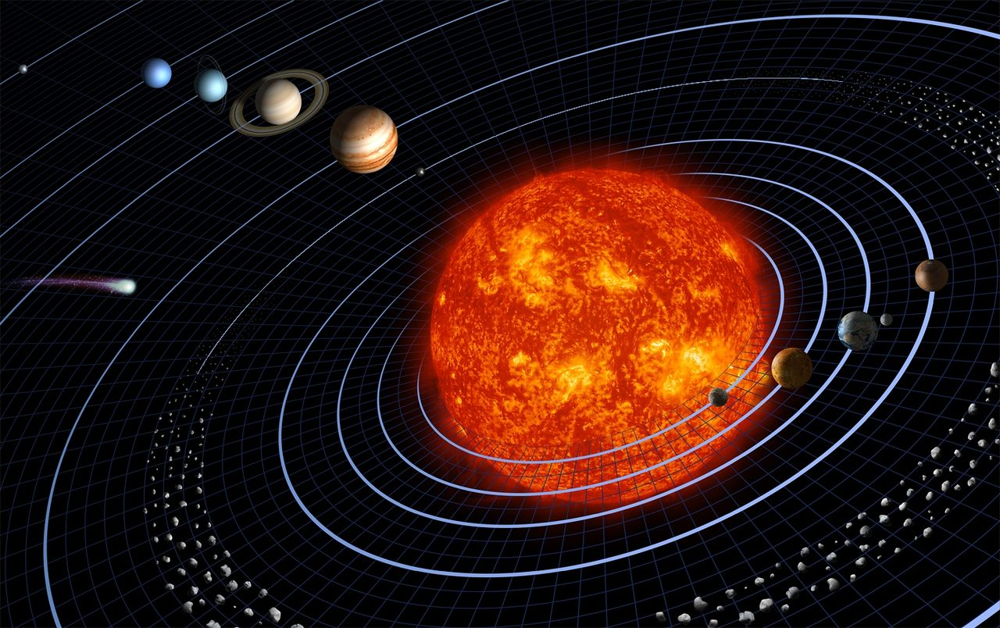
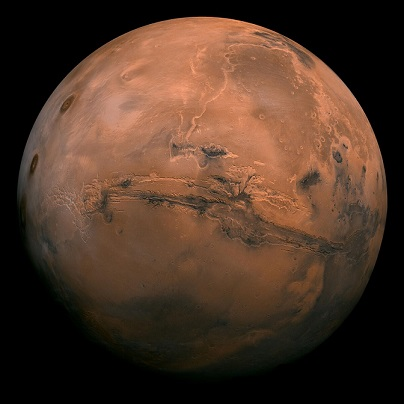
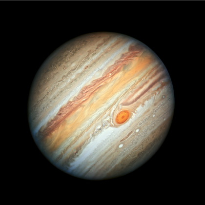
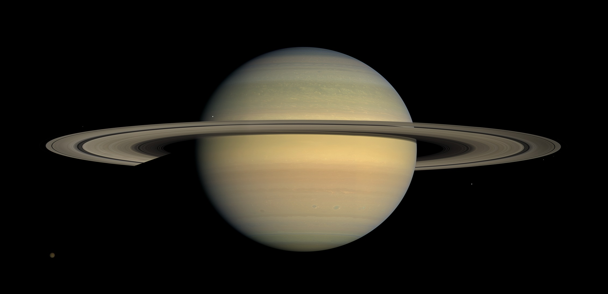
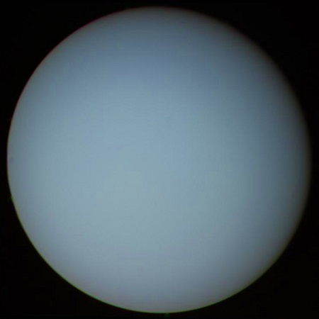
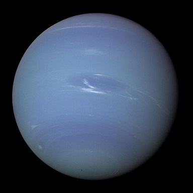

Saulės sistema
Apie Saulės sistemą
Saulės sistemą sudaro centrinis jos kūnas Saulė ir aplink ją
skriejantys įvairūs kosminiai kūnai: 8 planetos ir nykštukinės planetos su savo palydovais,
asteroidai, kometoidai, įvairios tarpplanetinės dulkės bei dujos ir kt. Nors Saulės sistema galima
vadinti bet kurią sistemą turinčią vieną arba kelias žvaigždes (saules), šiame straipsnyje „Saulės
sistema“ reiškia mūsų Saulės sistemą.

Saulės sistemos planetos:
Merkurijus ☿
Tai mažiausia ir arčiausiai nuo Saulės esanti planeta. Jos orbita
aplink Saulę trunka 87.97 Žemės dienas ir tai trumpiausias laikas iš visų Saulės sistemos planetų.
Merkurijus aplink Saulę skrieja ištęsta elipsine orbita. Per ilgą Merkurijaus naktį temperatūra
nukrinta iki 110 K (-163 °C).
Charakteristikos:
Charakteristikos:
| Pusiaujo skersmuo | 4 879,4 km | |
|---|---|---|
| Paviršiaus plotas | 7,5×10^7 kv.km | |
| Laisvojo kritimo pagreitis | 3,701 m/s² | |
| Apsisukimo apie ašį periodas | 58,65 d | |
| Paviršiaus temperatūra, K | Naktį - 100, dieną - 700 | |
| Palydovų skaičius | 0 | |

Venera ♀
Tai antroji pagal atstumą nuo Saulės planeta. Po Mėnulio tai – antrasis pagal šviesumą objektas
naktiniame danguje. Venerą nuolat dengia storas nepermatomas, gerai šviesą atspindintis debesų
sluoksnis, todėl įprastomis sąlygomis negalima pamatyti jos paviršiaus. Veneros atmosfera yra
tankiausia iš Žemės tipo planetų, ją sudaro daugiausia anglies dioksidas, o atmosferos slėgis
planetos paviršiuje yra 90 kartų didesnis nei Žemėje.
Charakteristikos:
Charakteristikos:
| Pusiaujo skersmuo | 12 103,7 km | |
|---|---|---|
| Paviršiaus plotas | 4,60×10^8 kv.km | |
| Laisvojo kritimo pagreitis | 8,87 m/s² | |
| Apsisukimo apie ašį periodas | 243,6 d. | |
| Paviršiaus temperatūra, K (vid) | 737 | |
| Palydovų skaičius | 0 | |

Žemė 🜨
Pagal atstumą Žemė yra trečia nuo Saulės. Jos amžius yra apie 4.57 mlrd. metų. Tai yra vienintelė
žinoma planeta, turinti gyvybę ir kuri yra kiekvieno mūsų namai. 70.8% Žemės paviršių dengia vanduo:
vandenynai, jūros, ežerai ir kiti vandenys.
Charakteristikos:
Charakteristikos:
| Pusiaujo skersmuo | 12 756,274 km | |
|---|---|---|
| Paviršiaus plotas | 510 065 600 kv.km | |
| Laisvojo kritimo pagreitis | 9,7801 m/s² | |
| Apsisukimo apie ašį periodas | 23 val. 56 min. 2,4 sek. | |
| Paviršiaus temperatūra, K (vid) | 287 | |
| Palydovų skaičius | 1 (Mėnulis) | |

Marsas ♂
Tai ketvirtoji pagal atstumą nuo Saulės ir septinta pagal dydį Saulės sistemos
planeta. Iš Žemės matomas plika akimi kaip ryški rausvos spalvos žvaigždė. Dėl rausvo atspalvio
žvelgiant iš Žemės kartais vadinama „raudonąja planeta“.
Charakteristikos:
Charakteristikos:
| Pusiaujo skersmuo | 6 804,9 km | |
|---|---|---|
| Paviršiaus plotas | 1,448×10^8 kv.km | |
| Laisvojo kritimo pagreitis | 3,69 m/s² | |
| Apsisukimo apie ašį periodas | 24 val. 37 min. | |
| Paviršiaus temperatūra, K (vid) | 210 | |
| Palydovų skaičius | 2 (Fobas, Deimas) | |

Jupiteris ♃
Tai penktoji pagal nuotolį nuo Saulės sistemos planeta, dujinė milžinė. Turi žiedų sistemą. piteris
aplink Saulę skrieja ištęsta elipsine orbita. Tai – didžiausia Saulės sistemos planeta, kurios
skersmuo už Žemės didesnis 11 kartų. Keli iš jos 79 palydovų yra: Ganimedas, Kalista, Ijo ir Europa.
Charakteristikos:
Charakteristikos:
| Pusiaujo skersmuo | 142 984 km | |
|---|---|---|
| Paviršiaus plotas | 6,14×10^10 kv.km | |
| Laisvojo kritimo pagreitis | 24,79 m/s² | |
| Apsisukimo apie ašį periodas | 9 val. 55 min | |
| Paviršiaus temperatūra, K (vid) | 152 | |
| Palydovų skaičius | 79 | |

Saturnas ♄
Tai antra pagal dydį (po Jupiterio) ir šešta pagal atstumą nuo Saulės planeta. Saturnas yra dujinė
planeta milžinė. Jo atmosfera (kaip ir Jupiterio) susideda daugiausia iš vandenilio ir
helio
Charakteristikos:
Charakteristikos:
| Pusiaujo skersmuo | 120 536 km | |
|---|---|---|
| Paviršiaus plotas | 4,27×10^10 kv.km | |
| Laisvojo kritimo pagreitis | 8,96 m/s² | |
| Apsisukimo apie ašį periodas | 10 val. 47 min. 6 sek. | |
| Paviršiaus temperatūra, K (vid) | 143 | |
| Palydovų skaičius | 60 | |

Uranas ⛢
Tai septinta planeta nuo Saulės. Kartu su Neptūnu vadinamas "ledinis milžinas". Urano atmosfera yra
šalčiausia visoje Saulės sistemoje. Kaip ir kiti dujiniai milžinai, Uranas turi žiedus, magnetosferą
ir daug palydovų.
Charakteristikos:
Charakteristikos:
| Pusiaujo skersmuo | 51 118 km | |
|---|---|---|
| Paviršiaus plotas | 8,084×10^9 kv.km | |
| Laisvojo kritimo pagreitis | 8,69 m/s² | |
| Apsisukimo apie ašį periodas | 17 val. 14 min. 24 sek. | |
| Paviršiaus temperatūra, K (vid) | 68 | |
| Palydovų skaičius | 27 | |

Neptūnas ♆
Tai aštunta Saulės sistemos planeta. Plika akimi yra nematomas, kadangi opozicijoje jo ryškis siekia
tik 7,6 ryškio. Neptūno atmosfera susideda iš vandenilio, helio, metano, amoniako. Paviršių nuolatos
dengia debesys, vėjų greitis atmosferoje siekia iki 400–700 m/s.
Charakteristikos:
Charakteristikos:
| Pusiaujo skersmuo | 49 528 km | |
|---|---|---|
| Paviršiaus plotas | 7,619×10^9 kv.km | |
| Laisvojo kritimo pagreitis | 11,15 m/s² | |
| Apsisukimo apie ašį periodas | 16 val. 6 min. 36 sek. | |
| Paviršiaus temperatūra, K (vid) | 53 | |
| Palydovų skaičius | 14 | |
